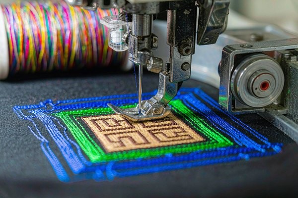
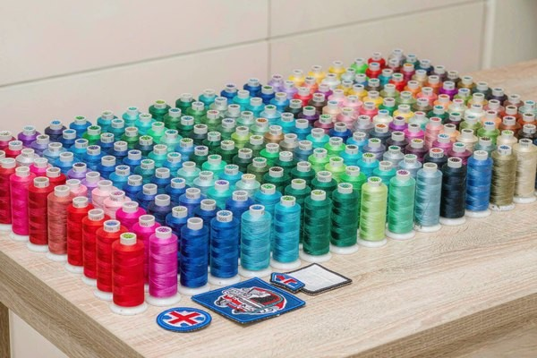
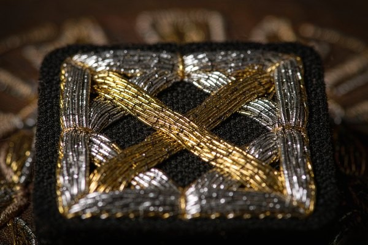

Embroidered Patch Thread Types: Quality Guide
The thread you choose decides whether a custom embroidered patch glows like jewelry or fades after three washes. This embroidered patch thread types guide breaks down rayon, polyester, metallic, and glow thread — so you can match sheen, durability, and color fastness to exactly how the patch will be worn.

1. Why Thread Type Decides How a Patch Looks and Lasts
Most people shopping for patches fixate on size, shape, and border — and forget the single material that the eye actually reads first: the thread. Two patches with identical artwork can look like different products just because one uses a high-sheen rayon and the other a flat polyester. The thread controls three things at once: how the light hits the surface, how long the color survives washing and sunlight, and how the patch feels under a finger.
When we talk about embroidered patch thread types, we're really balancing two forces. Rayon and metallic chase beauty — they catch light and read as premium. Polyester chases survival — it shrugs off UV, chlorine, and industrial laundry. Picking the right one isn't about finding the "best" thread; it's about matching the thread to the life the patch will live. A fire-department badge washed weekly needs polyester. A limited-edition fashion drop photographed once needs rayon's shine.
2. Rayon Thread: The Classic High-Shine Standard
Rayon is the default for most decorative embroidery, and for good reason. Made from regenerated cellulose, it produces a smooth, luminous surface that reads as "expensive" from across a room. Rayon thread runs at a high luster, stitches cleanly on standard machines, and shows fine gradients better than almost any other option.
The trade-off is softness — literally. Rayon has lower tensile strength and weaker color fastness than polyester, so it fades faster in direct sun and weakens under heavy abrasion. That's why rayon dominates fashion, caps, and awards patches where looks matter more than a decade of wear, and why it steps back on workwear. For most custom embroidered patches, rayon remains the safe, beautiful default.
Best use for rayon
- Fashion brands, hats, and collector patches where surface shine sells the product
- Detailed artwork with subtle tonal shifts (rayon's smoothness renders gradients cleanly)
- Indoor or light-use items that won't see weekly heavy washing
3. Polyester Thread: Built for Durability
Polyester is the workhorse. It lacks rayon's mirror shine — its finish is flatter, more matte — but it beats rayon on every durability axis. Polyester thread resists UV fading, survives industrial and tumble washing, and holds tensile strength under friction. On a military, tactical, or uniform patch that gets washed dozens of times, polyester is the only sensible choice.
Modern polyester has closed much of the looks gap. A good trilobal polyester gives a respectable sheen that fools most viewers at normal distance, so you rarely pay a visible penalty for the extra toughness. When a patch needs to look good after a year of real use, polyester wins. It also plays well with iron-on and sew-on backings on high-stress garments.

Best use for polyester
- Uniforms, tactical gear, and outdoor patches that face sun and repeated washing
- Children's and school patches where abrasion is constant
- Any order where color fastness matters more than maximum shine
4. Metallic Thread: Premium Sparkle, Special Handling
Metallic thread is what turns a patch into a trophy. It's a core filament — often a synthetic Lurex-style wrap — coated around a central yarn, so it reflects light like foil. Used as accent lettering or borders, metallic thread reads as luxury on fashion, military, and commemorative patches.
The catch is fragility. Metallic thread is prone to fraying, heat sensitivity, and breakage at high machine speed, so it demands slower stitching, the right needle, and usually a backing that supports the area. We typically run metallic as a highlight only — a logo outline, a star, a border — not as a filled background, because a full metallic fill invites breakage and a heavier, stiffer patch. Handled correctly, it's the highest-impact thread you can specify.

Best use for metallic
- Award, anniversary, and commemorative patches where prestige is the point
- Accent outlines, text, and small emblems — not large filled areas
- Fashion pieces photographed more than worn hard
5. Specialty Threads: Glow, Neon, and Fire-Retardant
Beyond the big three, a few specialty threads earn their place. Glow-in-the-dark thread charges under light and emits a soft phosphorescence — perfect for morale, festival, and safety patches; pair it with our glow-in-the-dark guide for the full effect. Neon and fluorescent threads pop under UV and read as playful or tactical depending on context. Fire-retardant (FR) thread meets safety specs for industrial and firefighting gear where a normal melt-prone thread is a hazard.
These threads cost more and sometimes run slower, but they solve problems no standard thread can. The rule is the same as always: match the thread to the job, not to the catalog.
6. Thread Weight, Sheen, and Color Fastness
Thread "weight" (commonly 40wt or 30wt) sets how thick the stitch line looks. A 40wt rayon is the all-rounder; a heavier 30wt reads bolder and fills faster but hides fine detail. Sheen runs from matte polyester through satin rayon to mirror metallic. Color fastness — measured by color fastness standards — tells you how the hue survives light, wash, and rub. Rayon scores lower on light fastness, polyester higher; metallic needs care to avoid tarnish.
Practically: request a Pantone-matched thread for brand colors, confirm the fastness grade for outdoor use, and expect metallic accents to need a touch more care in care instructions. Our color guide walks through thread and material color matching in detail.
7. Matching Thread to Patch Type and Use
Use this quick map when you brief an order:
- Fashion / caps / collector: Rayon for shine, or trilobal polyester if you want near-rayon looks with more wash life.
- Uniforms / tactical / workwear: Polyester, every time — durability beats a little extra gloss.
- Awards / luxury / limited runs: Polyester or rayon base with a metallic accent for the premium hit.
- Safety / outdoor / kids: Polyester, or a specialty glow/FR thread where the function demands it.
- Mixed-material patches: If you're comparing woven vs embroidered, see our woven vs embroidered guide — woven handles ultra-fine detail that thin thread can't.
Pro Tip: Combine Threads, Don't Compromise
You don't have to pick one thread for the whole patch. The strongest designs run a durable polyester base for the fill and a metallic or rayon accent for the highlights — tough where it counts, pretty where it shows. Tell us which areas should shine and which should survive, and we'll spec the combination per zone.
Frequently Asked Questions (FAQ)
Q1: Which thread type is most durable?
Polyester. It resists fading from sunlight, survives repeated washing and abrasion better than rayon or metallic, and keeps its tensile strength under friction. For any patch that will be worn and washed hard — uniforms, tactical gear, kids' items — polyester is the right call.
Q2: Is rayon or polyester shinier?
Rayon is shinier, with a smooth high-luster surface that reads as premium. Polyester is flatter and more matte, though modern trilobal polyester closes much of the gap. If maximum visual pop matters more than lifespan, choose rayon; if you need both, trilobal polyester is the compromise.
Q3: Can metallic thread be used for the whole design?
Not recommended. Metallic thread frays and breaks more easily, especially at high machine speed, and a full metallic fill makes a stiff, breakage-prone patch. Use it for accents — outlines, text, small emblems — over a polyester or rayon base. The result looks richer and lasts longer.
Q4: Does thread choice affect wash care?
Yes. Rayon and metallic fade and wear faster than polyester, so patches using them should be washed gentler and kept out of prolonged direct sun. Polyester-backed patches tolerate normal and even industrial laundering. Always match the care label to the weakest thread in the design.
Q5: Can I mix thread types in one patch?
Absolutely, and it's often the best approach. Run a durable polyester base for filled areas and a rayon or metallic accent for highlights. Mixed-thread patches get toughness where it matters and shine where it shows — without paying for premium thread across the entire design.
Conclusion: Pick the Thread for the Life the Patch Lives
Thread isn't a footnote — it's the surface your customer's eye lands on first. Rayon sells shine, polyester sells survival, metallic sells prestige, and specialty threads solve problems the rest can't. Decide how the patch will be worn and washed, then choose the thread that thrives in that life rather than the one that photographs best once.
Not sure which thread fits your artwork and use case? Send us your design and where the patch will live. Our team will recommend the right embroidered patch thread types, match the color, and deliver a free digital proof within 12 hours.
Need Help Choosing the Right Thread?
Upload your logo and tell us how the patch will be used. Our experts will spec rayon, polyester, or metallic thread — with a free 12-hour proof and factory-direct pricing, no minimum order!
Get Free Quote